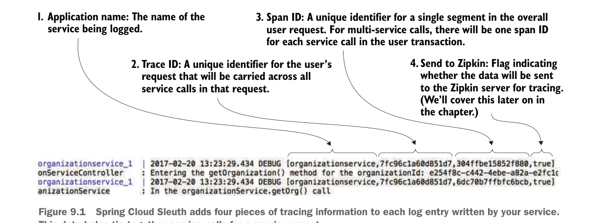

9.1.2 Anatomy of a Spring Cloud Sleuth trace
If everything is set up correctly, any log statements written within your service application code will now include Spring Cloud Sleuth trace information. For example, figure 9.1 shows what the service’s output would look like if you were to do an HTTP GET http://localhost:5555/api/organization/v1/organizations/e254f8c-c442-4ebe-a82a-e2fc1d1ff78a on the organization service.

Spring Cloud Sleuth adds four pieces of tracing information to each log entry written by your service. This data helps tie together service calls for a user’s request.
Spring Cloud Sleuth will add four pieces of information to each log entry. These four pieces (numbered to correspond with the numbers in figure 9.1) are
- Application name of the service—This is going to be the name of the application the log entry is being made in. By default, Spring Cloud Sleuth uses the name of the application (
spring.application.name) as the name that gets written in the trace. - Trace ID—Trace ID is the equivalent term for correlation ID. It’s a unique number that represents an entire transaction.
- Span ID—A span ID is a unique ID that represents part of the overall transaction. Each service participating within the transaction will have its own span ID. Span IDs are particularly relevant when you integrate with Zipkin to visualize your transactions.
- Whether trace data was sent to Zipkin—In high-volume services, the amount of trace data generated can be overwhelming and not add a significant amount of value. Spring Cloud Sleuth lets you determine when and how to send a transaction to Zipkin. The true/false indicator at the end of the Spring Cloud Sleuth tracing block tells you whether the tracing information was sent to Zipkin.